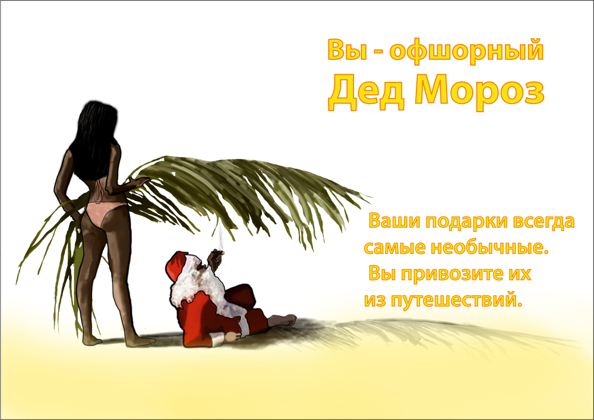

<html ng-app="app" ng-controller="mainCtrl as ctrl"></html><html><head><meta charset="utf-8"/><meta name="viewport" content="initial-scale=1, maximum-scale=1, user-scalable=no, width=device-width"/><base href="/" target="_self"/><title>Кто Вы в Новом Году?</title><link href="app.css" rel="stylesheet" type="text/css"/><link href="https://fonts.googleapis.com/css?family=Arimo:400,700&amp;subset=latin,cyrillic-ext" rel="stylesheet" type="text/css"/></head><body ng-class="getBg()" ng-cloak="ng-cloak" class="bg00"><div class="final-img"></div><script src="http://ajax.googleapis.com/ajax/libs/jquery/2.1.3/jquery.min.js"></script><script src="http://ajax.googleapis.com/ajax/libs/angularjs/1.3.13/angular.min.js"></script><script src="http://ajax.googleapis.com/ajax/libs/angularjs/1.3.13/angular-sanitize.min.js"></script><script src="./static/libs/lodash/lodash.js"></script><script src="app.js"></script></body></html>